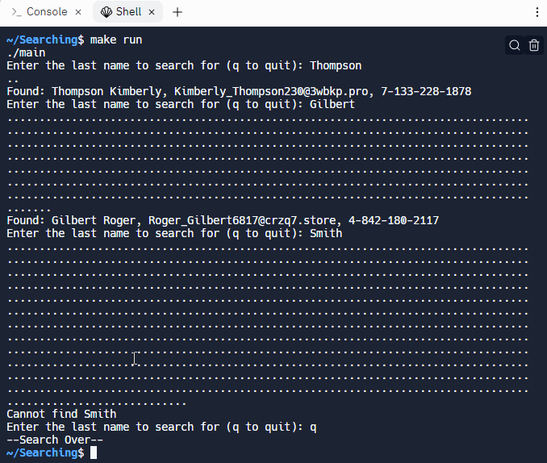

Linear Search
When you're finished, type make run in the Console tab, and enter in some last names to search for. Here's what happens when I run the program.

- I start with Thompson, the first name in the file, so the program immediately finds and prints the answer, displaying only two "dots" before the answer.
- When I look for Gilbert, the program needs to look through a little more than half of the array before finding Roger Gilbert.
- When I look for Smith, surprisingly there are no Smiths in the directory. The program has to look through every single element before it can report the fact that it failed.
So, what conclusions can we make from this experiment?
 This course content is offered under a
CC
Attribution Non-Commercial license. Content in this course
can be considered under this license unless otherwise noted.
This course content is offered under a
CC
Attribution Non-Commercial license. Content in this course
can be considered under this license unless otherwise noted.